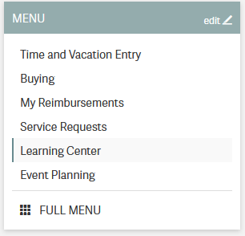
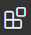
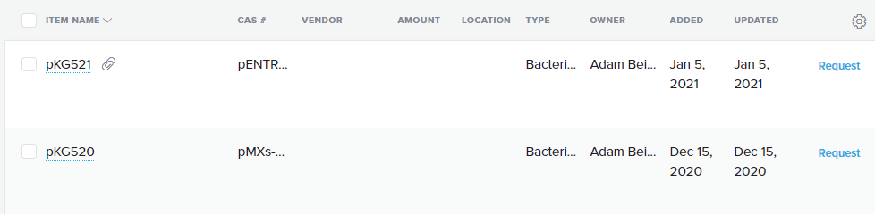
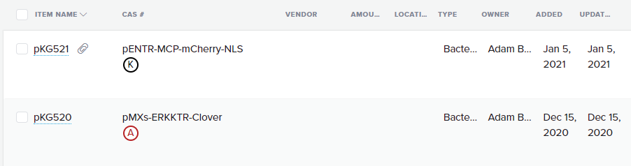
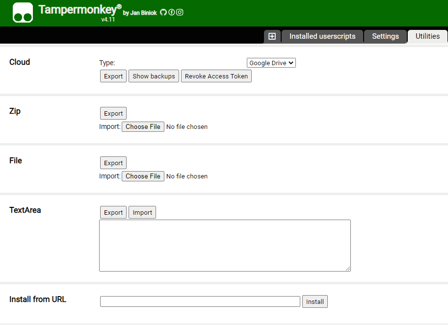
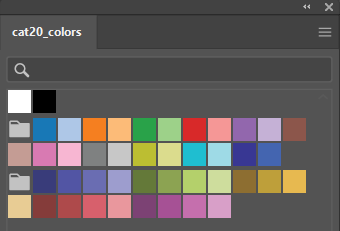
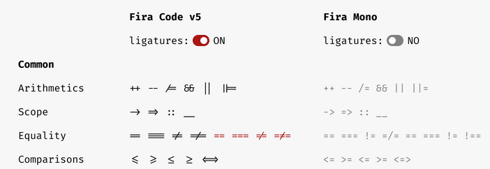

Day 0: Software and training setup
Our lab uses a various software and webservices for digital infrastructure and organization. Before beginning work in the lab, you must complete all required Environment, Health & Safety (EHS) trainings. New grad students and postdocs should also install or set up accounts for everything listed here; others should ask their mentor which are essential.
Check off each task as you complete it on the lab Onboarding Form (download the one for grad students/postdocs or undergrads/visiting students). The most recent forms are also located in this folder in the lab SharePoint.
Important
Most of the software and webservices require an MIT ID/email. You should prioritize getting this set up. However, if you are waiting on paperwork, you can download most of the software (even if you won’t be able to log in yet). After that, you may wish to read through the Day 1, Day 2, and linked pages on the protocols site.
EHS setup and trainings
Adding yourself to the lab’s training group will register you with the EHS system and add all necessary trainings to your profile.
Go to https://atlas.mit.edu and go to the learning center, through the tab on the left:

In the upper right, select “My Profile”, then “Update PI/Activities”.
Add Kate E. Galloway as your PI.
Select the following training types (5 total). If you are an undergrad, do not select the BL2+ training group.
{kind=link}
{kind=link}
{kind=link}
{kind=link}
After submitting, many required trainings will be added to your Learning Center.
Complete the online trainings. This will likely take a few hours!
Some trainings have a required “classroom” component, such as the Lab Specific Chemical Hygiene training, which will be completed with an in-lab walkthrough.
To complete the Signature: Read Dept. Chemical Hygiene Plan training, please read the Chemical Hygiene Plan and then sign the attestation form, available at: https://web.mit.edu/cheme/resources/lab/ehs/ehs_cert.html
Note
One of the components of the bloodborne pathogen training is the opportunity to be vaccinated for Hepatitis B or to have an antibody titer test for free.
Most of us were vaccinated for HepB as children, but that vaccine was only ~90% effective, so you may want to get the free antibody titer test. You can get a free booster or get doses of a new, more modern HepB vaccine if you no longer have HepB antibodies.
(Grad students and postdocs only) Also add and complete the following:
Autoclave Safety Training, required for access to the autoclave/ice room.
Shipping Training (new as of June 2026), required for shipping any materials on behalf of MIT.
If you are going to be helping with mouse work, in the “My Profile” tab under “Training Groups” click “Join Another Group” and add the 68N: Mouse training group. Complete the additional trainings. Note that some of these require in-person trainings in the mouse facilities, which can be completed over the next few months.
Software and webservices
Core webservices
Create a Github account. You can use either a personal or MIT email.
Activate your student benefits by going to https://education.github.com/discount_requests/student_application. You will be asked to connect your MIT email and send in a picture of your student ID. (Because MIT does not remove emails for alums, they need to confirm active student status.)
Create a Zotero account. Using a personal email is recommended for permanence reasons.
Create an ORCID. Adding all of your active emails is recommended.
Request an MIT Google Workspace account. This provides access to Google services like Drive, Docs, Calendar, etc. Note that it may take 24 hours to activate. Alternatively, you can use a personal Google Account for access to a lab calendar.
(New grad students and postdocs only) Create a Quartzy account. Using your MIT email is recommended.
After creating these accounts, request access to the lab’s group on the relevant webservices. Most of these are managed by one or two lab members; see the onboarding form for who to contact. Message them with the following information: your Kerberos ID (MIT email), your Github username, your Zotero username, the email you’d like added to the lab Google Calendar, and the email associated with your Quartzy account.
Then, you must accept the Github invitation to the GallowayLabMIT organization
and the Zotero invitation to the gallowaylab group, checking that it appears in your group list.
{kind=link}
{kind=link}
Coding and collaboration
Slack is how we communicate! After downloading it, sign into https://gallowaylab.slack.com. In addition to the default channels, you may want to join
#sequencingto get your sequencing orders delivered right to you via Slack, and join#memesfor obvious reasons. Ask your mentor or point of contact to add you to any other relevant private channels.VS Code: Having a good plain-text editor (not Word) is important for coding, and is ultimately up to personal taste. We recommend Visual Studio Code (VS Code), downloadable here. However, if you have a different favorite editor, you may use that. If you are used to language-specific IDEs like MATLAB, IDLE, or RStudio, VS Code allows you to do editing, debugging, previewing, source control, etc in a mostly language-agnostic manner; once you customize it to your preferences, you can use it for all of your coding.
After installing, you should click the extensions button:

and search and install the following extensions (type in the name, click the install button).
Recommended VS Code extensions Name
Image
Description
Code Spell Checker
Inline spell checker that is intelligent enough to not flag specific language-specific words, but still can spell check comments and variable names.
Esbonio
Support for editing Sphinx projects, e.g., this protocols site. The live preview function is super helpful!
Jupyter
Inline Jupyter notebook support. No more need to launch Jupyter in a web browser, just do it inside VS Code!
Pylance
Faster ‘language server’ for Python, which means the IntelliSense is faster and more accurate.
Python
Enables Python debugging, running, and IntelliSense (in-line help while typing).
R (optional)
Base language support for R.
R LSP Client (optional)
The VS Code side of the R language server. Before installing this, run
install.packages("languageserver")inside an R prompt.reStructuredText
Enables reStructuredText support, the language used to write this documentation, among others.
reStructuredText Syntax highlighting
Enables syntax highlighting for reStructuredText.
Snakemake Language
Snakemake syntax highlighting for editing computational pipelines.
Git: For any code/code-like files (LaTeX, other plain-text files), Git is the standard way to share and collaborate with others and to track version history.
You must install the base command-line tools from here. Select your operating system and not the “Download source code” button. For macOS, the easiest way is probably the “Xcode Command Line Tools” option.
Tip
When installing Git, you may want to change Git’s default editor to something other than Vim, such as VS Code.
When asked about adjusting the PATH environment, choose the Git from the command line and also from 3rd-party software option; this makes sure all the other software also has Git access. All other defaults are fine, but can be changed if you want.
After installation, you should set your global identity on that computer, i.e., the name and email that gets stored alongside the work you do. To do so, open a terminal (Terminal on macOS, Powershell on Windows) and type the following lines (without the beginning
$, which identifies here that we are typing this into a terminal), substituting your name and email (giving an email you associated with your Github account). If you’re not familiar with the terminal, check out our intro here.$ git config --global user.name "Full Name" $ git config --global user.email email_address@example.com
For a comprehensive introduction to Git, check out our intro here or this tutorial from Git.
(Optional) Github Desktop: This program is a good basic GUI Git tool, in case the command line interface or built-in editor interfaces aren’t for you. Download it here.
Python: Python is an excellent “Jack of all trades” language; we use it extensively. If you are on macOS, you may have Python3 pre-installed; you can check by typing
python3at a terminal. If you do not have Python preinstalled, you should download it here. Click the latest version download from the top, then scroll down and select the 64-bit installer for your OS.When installing, select Add Python to PATH; this ensures that when you type
pythonat a terminal, you get this version you just installed. Other software can also access this “default” installation. After installing, restart VS Code.What is PATH?
PATHis a “environment variable”, i.e., something that any program running in the “environment” of your computer can access. It is a list of folders where software can be found. In a command line, when you type a program name (likels, orpython, orgit) without specifying where the program is, your computer iterates through every folder inPATHto see if it can find the program there.Bonus fact: virtual environments work by temporarily messing with
PATH, redirecting calls to programs like Python to the virtual environment install.On snakes and Anaconda
If you have Anaconda installed and don’t have an explicit reason to need it (e.g., conda-only packages), it is recommended to uninstall Anaconda and install Python directly this way.
With modern Python, the benefits that Anaconda initially brought to the field (virtual environments and pre-compiled packages) are now integrated into the normal Python ecosystem, making Anaconda unnecessary. We also don’t want multiple Python versions competing.
To make sure the install worked, open a new terminal and type
python(orpython3on macOS), checking that the output looks similar to the following. Then exit the Python prompt by typingexit().$ python Python 3.9.1 (tags/v3.9.1) [MSC v.1916 64 bit (AMD64)] on win32 Type "help", "copyright", "credits" or "license" for more information.
Fixing Python “command not found” (Windows & macOS)
If you see errors like
'python' is not recognized as an internal or external commandcommand not found: python
then you likely forgot do the above step (clicking Add Python to PATH), or you didn’t restart VS Code. The easiest way to fix this is to simply uninstall Python and reinstall it, while clicking the box. If you don’t want to do that for some reason, you can manually add Python to PATH.
Windows
You need to find where Python is installed. This will vary! The easiest way to do this is just search for
python.exeto locate where that folder is. This might look something likeC:\Users\<USERNAME>\AppData\Local\Python\python-3.14\python.exeThen:
Press the Windows key on your keyboard to bring up the search.
Search for Edit environment variables
In the box that shows up, click Edit the system environment variables.
Click Environment Variables.
In the User variables for <USERNAME> box, find the Path variable and click Edit.
In the list of directories that shows up, click New and add the folder containing Python identified earlier.
Click OK and restart any open terminals and VS Code to pick up the change. (If you’re unsure, log out and log back in to your computer.)
macOS / Linux
On macOS and Linux, you handle the path by editing your shell configuration file, normally either at
~/.zshrcfor zsh or~/.bashrcfor Bash.In these lines, you should add an export call to add the Python location to the end of path, like:
export PATH="$PATH:/path/to/python/that/you/found(Optional) R: Many bioinformatics tools are written in R, but there are also many good Python versions. You can install this now, or wait to see if you need it later. From here, download the main package (macOS) or both the
baseentry and theRtoolsentry (Windows).(Optional) RStudio: If you don’t feel like using VS Code for your R work, the excellent, well-polished standard IDE is RStudio Desktop, downloadable here.
{kind=link}
{kind=link}
{kind=link}
{kind=link}
{kind=link}
{kind=link}
{kind=link}
{kind=link}
{kind=link}
{kind=link}
Experimental software
SnapGene: We use SnapGene for molecular cloning and plasmid design. Download it through MIT IST here, and access the registration code here (MIT login required for both links).
FlowJo: We have a single license on lab computers for analyzing flow cytometry data; we can show you how it works in-lab.
(Optional) FIJI: For simple image analysis, Fiji (ImageJ) gives a nice GUI interface. Download it from https://fiji.sc
(Optional) CellProfiler: CellProfiler is an excellent tool for doing image cytometry (analyzing cell-by-cell in image data). In contrast to the GUI-only tools built into the Keyence software, CellProfiler enables repeatable, pipelinable analyses. Download it from https://cellprofiler.org/
Other
Zotero: Zotero is an excellent free, open-source citation manager. After downloading Zotero from https://www.zotero.org/, it should prompt you to install the Zotero Connector, a browser plugin that lets you download paper citations with one click. If it doesn’t prompt you, download the connector here. We also have a shared Zotero group, which you should have requested access to above, to accumulate citations when writing manuscripts.
Several helpful plugins can be downloaded; the recommended ones are:
Recommended Zotero plugins Name
Description
Enables useful file operations, such as extracting annotations from a marked-up PDF, transferring new papers to a tablet for annotation, and auto-file renaming.
Enables helpful tagging operations, such as the ability to copy/paste tags or easily add paper relationships.
If you plan to use LaTeX, install this plugin before exporting to BibTeX. This addon makes nice-looking, stable citation keys that do not change on export.
Downloading Zotero plugins through Firefox
Since Zotero is built on modified Firefox, Zotero plugins appear similar to Firefox plugins. If downloading these plugins through Firefox, you will need to explicitly right click -> “download target”; left-clicking on download links will attempt to install the Zotero plugin as a Firefox plugin, which will fail.
Better Quartzy:
TODO
Unfortunately, the Quartzy interface updated, so our userscript to customize the appearance is broken. :(
While Quartzy is great for inventory purposes and the interface for the plasmid database isn’t too bad, the web interface leaves a lot to be desired. By default, you can’t really read the plasmid names even after you move the “CAS #”” field to the second position:

To fix this, there is a Quartzy enhancer to make the plasmid field larger and to directly list the antibiotic resistance (Amp/Kan/Chlor) below the plasmid.

This feature is implemented using something called userscripts; these are small Javascript scripts that get injected into webpages; effectively they are mini browser extensions.
To set this up, install a userscript manager like Tampermonkey.
Then, click on this link to add the userscript: https://gist.github.com/meson800/f28e64d532da9b0fe2a1d22480ea5cda/raw/quartzy_enhancer.user.js
Or, in the Tampermonkey Utilities tab, you can use the install from URL option:

{kind=link}
{kind=link}
{kind=link}
Adobe Creative Cloud: MIT has a site license for students and staff (but unfortunately, not for affiliates). After installing the Creative Cloud application, select “Work/School account” and login with your MIT credentials. You may have to wait 24 hours for activation after your first login. You should install Acrobat (for viewing PDFs) and Illustrator (for drawing graphics).
Note
As a free and open-source alternative to Adobe Creative Cloud, you can also check out Inkscape (download here). Inkscape and Illustrator have many similar but not completely overlapping features. Inkscape’s PDF importer (Cairo) may be superior for importing vector images from manuscript PDFs. Inkscape may be useful to know if you don’t want to pay for Creative Cloud later; however, we use Adobe software for creating graphics and figures in lab.
Color palettes: Having nice color-blind friendly, distinct colors is helpful when you begin creating graphics. Palettes help unify figures and convey consistent information via color.
You can download pre-created palettes for both Illustrator and Inkscape for the well-known Category20/20b color set, which is color-blind friendly (and becoming the default in more and more software packages):

To use these palette files, see the Illustrator documentation (“Create and open swatch libraries”) or the Inkscape documentation.
Fonts: Helvetica Neue is a good sans-serif font that is based on everyone’s favorite font, Helvetica. While not required, many people in lab use this font, so their files (e.g., PowerPoint, Illustrator) won’t render well if you don’t have it installed. First, download it here (macOS, Linux) or here (Windows). Then, unzip the folder, select all the
.tfffiles, and double click to open, which should prompt installation. Alternatively, right click and select “Install font”.For a good monospaced/code/terminal font, Fira Code is excellent (download here). Besides looking nice, Fira Code has something called font ligatures. These are originally defined for special letter combinations, like æ for adjacent ae. In Fira Code, common programming combinations are given special ligature symbols that appear as you type normally. You often have to enable ligatures in the editor you are using.

{kind=link}
{kind=link}